제강기능사 (2008-02-03 기출문제)
1과목: 임의 구분
1. 주석청동의 용해 및 주조에서 1.5~1.7%의 아연을 첨가할 때의 효과로 옳은 것은?
- 수축율이 감소된다.
- 침탄이 촉진된다.
- 취성이 향상된다.
- 가스가 혼입된다.
(정답률: 59%)

2. 다음 중 금속의 가공경황에 대한 설명으로 옳은 것은?
- 경도 및 인장강도가 증가하나, 연신율은 감소한다.
- 경도 및 인장강도가 감소하나, 연신율은 증가한다.
- 취성 및 인성이 증가하고 연신율 또한 증가한다.
- 점성 및 취성이 증가하고 기계 가공성을 나빠지게 한다.
(정답률: 67%)
3. 다음 중 자기변태에 대한 설명으로 옳은 것은?
- 자기적 성질의 변화를 자기변태라 한다.
- 결정격자의 결정구조가 바뀌는 것을 자기변태라 한다.
- 일정한 온도에서 급격히 비연속적으로 일어나는 변태이다.
- 원자배열이 변하여 두 가지 이상의 결정 구조를 갖는 것이 자기변태이다.
(정답률: 84%)
4. 주철의 일반적인 성질을 설명한 것 중 틀린 것은?
- 용탕이 된 주철은 유동성이 좋다.
- 공정 주철의 탄소량은 4.3% 정도 이다.
- 강보다 용융 온도가 높아 복잡한 형상이라도 주조하기 어렵다.
- 주철에 함유하는 전탄소(total carbon)는 흑연+화합탄소로 나타낸다.
(정답률: 80%)
5. 다음 비철합금 중 비중이 가능 가벼운 것은?
- 아연(Zn) 합금
- 니켈(Ni) 합금
- 알루미늄(Al) 합금
- 마그네슘(Mg) 합금
(정답률: 69%)
6. Al의 실용합금으로 알려진 실루민(Silumin)의 적당한 규소(Si) 함유량은?
- 0.5~2%
- 3~5%
- 6~9%
- 10~13%
(정답률: 76%)
7. 다음 중 주철에서 칠드 층을 얇게 하는 원소는?
- Co
- Sn
- Mn
- S
(정답률: 64%)
8. 다음 중 비정질 합금의 특징에 대한 설명으로 틀린 것은?
- 구조적으로 규칙성을 가지고 있다.
- 열에 강하며, 결정 이방성을 갖는다.
- 균질한 재료이며, 전기 저항성이 크다.
- 고옹네서 결정화하여 완전히 다른 재료가 된다.
(정답률: 38%)
9. 다음 성분 중 질화층의 경도를 높이는데 기여하는 원소로만 나열된 것은?
- Al, Cr, Mo
- Zn, Mg, P
- Pb, Au, Cu
- Au, Ag, Pt
(정답률: 76%)
10. 철강 재료에 황(S)이 함유되어 있으면 고온에서 가공할 때 균열이 생겨 가공이 어려워진다. 이러한 균열을 어떤 취성이라 하는가?
- 저온 취성
- 청열 취성
- 뜨임 취성
- 적열 취성
(정답률: 74%)
11. 주석-구리-안티몬의 합금으로 주석계 화이트 메탈이라고 하는 것은?
- 인코넬
- 배빗메탈
- 콘스탄탄
- 알클래드
(정답률: 63%)
12. 다음 중 체심입방격자의 표시 기호로 옳은 것은?
- LCP
- GCC
- BCT
- LCC
(정답률: 60%)
13. 담금질의 깊이를 깊게하고, 크리프 저항과 내식성을 증가시키며 뜨임메짐을 방지하는데 효과가 큰 원소는?
- Mn
- W
- Si
- Mo
(정답률: 50%)
14. 다음 중 구리에 대한 일반적인 설명으로 틀린 것은?
- 열과 전기의 전도율이 높다.
- 내식성이 있어 선박용으로 사용된다.
- 구리의 비중은 약 2.7 정도이다.
- 상오넹서 결정구조는 면심입방격자이다.
(정답률: 55%)
15. 금속에 관한 다음 설명 중 틀린 것은?
- 전기전도율은 일반적인 경우 순수한 금속보다 합금이 우수하다.
- 열전도율은 일반적인 경우 합금보다 순수한 금속일수록 우수하다.
- 금속을 가열시키면 녹아서 액체가 되는 지점의 온도를 용융온도 또는 용융점이라 한다.
- 금속의 비열은 물질 1g의 온도를 1℃ 만큼 높이는데 필요한 열량으로 cal/g·℃로 표시한다.
(정답률: 68%)
16. 다음 중 회전단면을 주로 이용하는 부품은?
- 파이프
- 기어
- 훅크
- 중공축
(정답률: 60%)
17. 다음 선의 종류 중 굵기가 다른 것은?
- 치수보조선
- 치수선
- 지시선
- 외형선
(정답률: 80%)
18. 다음 중 한쪽 단면도(반 단면도)에 대한 설명으로 가장 적절한 것은?
- 물체 전체를 직선으로 절단하여 앞부분을 잘라내고, 남은 뒷부분의 단면 모양을 그린 것이다.
- 주로 대칭 모양의 물체를 중심선 기준으로 내부 모양과 외부 모양을 동시에 표시하는 방법이다.
- 일부분을 잘라내고 필요한 내부 모양을 그리기 위한 방법이며, 파단선을 그어서 단면 부분의 경계를 표시하는 것이다.
- 암, 리브, 축과 같은 구조물에 사용하는 형강, 각강 등의 절단한 단면 모양을 90°로 회전시켜 투상도의 안이나 밖에 그린 것이다.
(정답률: 60%)
19. 기어(grer)제도에서 피치원은 어떤 선으로 그리는가?
- 가는 실선
- 굵은 실선
- 가는 은선
- 가는 일점쇄선
(정답률: 54%)
20. 일반적으로 도면의 표제란이 기입되는 위치는 제도용지의 어느 부분인가?
- 오른쪽 위
- 오른쪽 아래
- 왼쪽 위
- 왼쪽 아래
(정답률: 77%)
2과목: 임의 구분
21. 다음 입체도를 3각법으로 바르게 투상한 것은?
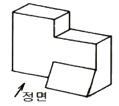
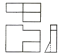
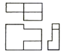
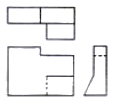
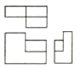
(정답률: 73%)
22. 도면을 접을 때는 A4 크기를 원칙으로 하고 있다. A4 용지의 크기는?
- 148×210(mm)
- 210×297(mm)
- 297×420(mm)
- 420×594(mm)
(정답률: 84%)
23. 다음 중 구멍의 최소 치수가 축의 최대 치수보다 큰 경우로서 미끄럼 운동이나 회전 운동이 필요한 부품에 적용되는 끼워맞춤은?
- 헐거운 끼워맞춤
- 억지 끼워맞춤
- 중간 끼워맞춤
- 가열 끼워맞춤
(정답률: 73%)
24. 정투상도법에서 “눈→투상면→물체”의 순으로 투상할 경우의 투상법은?
- 제1각법
- 제2각법
- 제3각법
- 제4각법
(정답률: 74%)
25. “KS D 2402 SS 330”에서 최저인장강도를 표시한 것은?
- 35
- 03
- 3503
- 330
(정답률: 90%)
26. 다음 중 나사의 리드(lead)를 구하는 식으로 옳은 것은? (단, 줄 수 : n, 피치 : P)
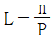
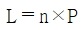
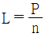
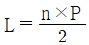
(정답률: 57%)
27. 치수를 옮기거나, 선과 원주를 같은 길이로 분할할 때에 사용하는 제도용구는?
- 운형자
- 컴퍼스
- 디바이더
- 형판
(정답률: 53%)
28. 주입 작업시 하주법에 대한 설명으로 틀린 것은?
- 주형 내 용강면을 관찰할 수 있어 주입속도 조정이 쉽다.
- 용강이 조용하게 상승하므로 강괴 표면이 깨끗하다.
- 주형 내 용강면을 관찰할 수 있어 탈산 조정이 쉽다.
- 작은 강괴를 한꺼번에 많이 얻을 수 있으나, 주입시간은 길어진다.
(정답률: 82%)
29. 전로의 특수조업법 중 강욕에 대한 산소제트 에너지를 감소시키기 위하여 취련 압력을 낮추거나 또는 랜스 높이를 보통보다 높게 하는 취련 방법은?
- 소프트 블로우(soft blow)
- 스트랭스 블로우(strength blow)
- 더블 슬래그(double slag)
- 2단 취련법
(정답률: 81%)
30. LD 전로의 로내 반응은?
- 환원반응
- 배소반응
- 산화반응
- 황화반응
(정답률: 50%)
31. 그림은 DH법(흡인탈가스법)의 구조이다. ( )의 구조 명칭은?
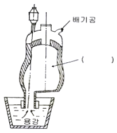
- 레이들
- 취상관
- 진공조
- 합금 첨가장치
(정답률: 86%)
32. 다음 중 무재해운동의 이념 3원칙이 아닌 것은?
- 무의 원칙
- 전원 참가의 원칙
- 이익의 원칙
- 선취 해결의 원칙
(정답률: 80%)
33. Mold Flux의 주요 기능을 설명한 것 중 틀린 것은?
- 주형내 용강의 보온작용
- 주형과 주편간의 윤활작용
- 부상한 개재물의 용해흡수작용
- 주형내 용강표면의 산화 촉진작용
(정답률: 72%)
34. 전로작업 중 로체 수명에 대한 설명으로 옳은 것은?
- 용강의 온도가 높게 되면 로체 수명이 길어진다.
- 산소의 사용량이 적으면 로체 수명이 감소한다.
- 용선 중에 Si 양이 증가하면 로체 수명은 감소한다.
- 형석의 사용량이 증가함에 따라 로체 수명이 길어진다.
(정답률: 53%)
35. 연속 주조에서 주형에 들어가는 용강의 양을 조절하여 주는 것은?
- 턴디시
- 핀치로울
- 더미바
- 에이프런
(정답률: 75%)
36. 그림의 안전·보건표지는 무엇을 나타내는가?
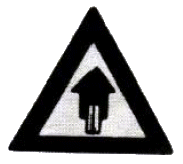
- 출입금지
- 진입금지
- 고온경고
- 위험장소경고
(정답률: 70%)
37. 주조의 생산능률을 높이기 위해서 여러 개의 레이들 용강을 계속해서 사용하는 방법은?
- Oscillation mark법
- Gas bubbling법
- 무산화 주조법
- 연-연주법(連-連鑄法)
(정답률: 72%)
38. 각 사업장의 안전관리 지수인 도수율을 나타내는 계산식으로 옳은 것은?
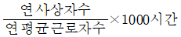
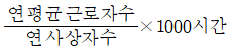
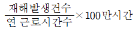
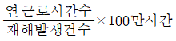
(정답률: 54%)
39. 진공탈가스법의 처리효과에 대한 설명으로 틀린 것은?
- 기계적 성질이 향상된다.
- H, N, O 가스 성분이 증가된다.
- 비금속 개재물이 저감한다.
- 온도 및 성분의 균일화를 기할 수 있다.
(정답률: 81%)
40. 출강 중 합금철 투입 시 출강량이 140ton이고, 용강 중에 Mn 이 없다고 판단될 때, 목표 Mn 이 0.25% 라면 Mn의 투입량은 몇 kg 인가?
- 350
- 450
- 490
- 520
(정답률: 36%)
3과목: 임의 구분
41. 이중표피(double skin) 결함이 발생하였을 때 예상되는 가장 주된 원인은?
- 고온고속으로 주입할 때
- 탈산이 과도하게 되었을 때
- 주형의 설계가 불량할 때
- 상주 초기 용강의 스프래쉬(Splash)에 의한 각이 형성 되었을 때
(정답률: 75%)
42. 다음 중 강괴의 편석 발생이 적은 상태에서 많은 순서로 나열한 것은?
- 킬드강 – 캐프드강 – 림드강
- 킬드강 – 림드강 – 캐프드강
- 캐프드강 – 킬드강 – 림드강
- 캐프드강 – 림드강 – 킬드강
(정답률: 81%)
43. 전기설비 화재시 가장 적합하지 않은 소화기는?
- 포소화기
- CO2 소화기
- 인산염류 분말소화기
- 할로겐화합물 소화기
(정답률: 49%)
44. 다음 중 혼선로의 기능에 대한 설명으로 틀린 것은?
- 용선을 균질화시킨다.
- 용선의 저장 역할을 한다.
- 용선의 보온 역할을 한다.
- 용선에 인(P)의 양을 높인다.
(정답률: 75%)
45. 다음 중 탈인(P)을 촉진시키는 것으로 틀린 것은?
- 강재의 산화력과 염기도가 낮을 것
- 강재의 유동성이 좋을 것
- 강재 중 P2O5 가 낮을 것
- 강욕의 온도가 낮을 것
(정답률: 58%)
46. 다음 중 탄소강에서 가장 편석을 심하게 일으키는 원소는?
- 황(S)
- 실리콘(Si)
- 크롬(Cr)
- 알루미늄(Al)
(정답률: 68%)
47. 다음 사항에 대한 출강 실수율은 약 얼마인가? (단, 용선 : 290 ton, 고철 : 30 ton, 냉선 : 200 kg, 출강 용강량 : 300 ton 이다.)
- 83.7%
- 93.7%
- 100.7%
- 110.7%
(정답률: 65%)
48. 레이들 용강을 진공실 내에 넣고 아크가열을 하면서 아르곤 가스 버블링 하는 방법으로 Finkel-Mohr법 이라고도 하는 것은?
- DH 법
- VOD 법
- RH-OB 법
- VAD 법
(정답률: 49%)
49. 아크로식 전기로에서 탈수소를 유리하게 하는 조건 중 틀린 것은?
- 슬래그의 두께가 두껍지 않을 것
- 대기 중의 습도가 낮을 것
- 강욕의 온도를 낮출 것
- 탈산속도가 클 것
(정답률: 54%)
50. 제강작업에 사용되는 합금철이 구비해야 하는 조건 중 틀린 것은?
- 용강 중에 있어서 확산속도가 클 것
- 산소와의 친화력이 철에 비하여 작을 것
- 화학적 성질에 의해 유해원소를 제거시킬 것
- 용강 중에 있어서 탈산 생성물이 용이하게 부상 분리될 것
(정답률: 56%)
51. 다음 중 전로작업의 일반적인 작업순서로 옳은 것은?
- 출강작업 → 취련작업 → 장입작업 → 배재작업
- 출강작업 → 배재작업 → 취련작업 → 장입작업
- 장입작업 → 취련작업 → 출강작업 → 배재작업
- 장입작업 → 출강작업 → 배재작업 → 취련작업
(정답률: 80%)
52. 다음 중 규소의 약 17배, 망간의 90배 까지 탈산시킬 수 있는 것은?
- Al
- Fe-Mn
- Si-Mn
- Ca-Si
(정답률: 74%)
53. 제강법에서 사용하는 주 원료가 아닌 것은?
- 고철
- 냉선
- 용선
- 철광석
(정답률: 68%)
54. 다음 중 백점의 가장 큰 원인이 되는 것은?
- 산소
- 질소
- 수소
- 아르곤
(정답률: 63%)
55. 주형과 주편의 마찰을 경감하고 구리판과의 융착을 방지하여 안정한 주편을 얻을 수 있도록 하는 것은?
- 주형
- 레이들
- 슬라이딩 노즐
- 주형 진동장치
(정답률: 70%)
56. 다음 중 전기로 제강법에 대한 설명으로 옳은 것은?
- 일반적으로 열효율이 나쁘다.
- 용강의 온도 조절이 용이하지 못하다.
- 사용원료의 제약이 적고, 모든 강종의 정련에 용이하다.
- 로내 분위기를 산화 및 환원 한가지 상태로만 조절이 가능하며, 불순원소를 제거하기 쉽지 않다.
(정답률: 72%)
57. 다음 중 산성 내화물이 아닌 것은?
- 규석질
- 납석질
- 샤모트질
- 돌로마이트질
(정답률: 77%)
58. 취련 초기 미세한 철입자가 로구로 비산하는 현상은?
- 스피팅(spitting)
- 슬로핑(slopping)
- 포밍(foaming)
- 행깅(hanging)
(정답률: 79%)
59. 다음 중 전기로에서 사용하는 가탄제로 적합하지 않은 것은?
- 생석회
- 선철
- 무연탄
- 전극설
(정답률: 50%)
60. 전기로 제강법에서 천정연와의 품질에 대한 설명으로 틀린 것은?
- 내화도가 높을 것
- 내스폴링성이 좋을 것
- 하중연화점이 낮을 것
- 연화시의 점성이 높을 것
(정답률: 39%)